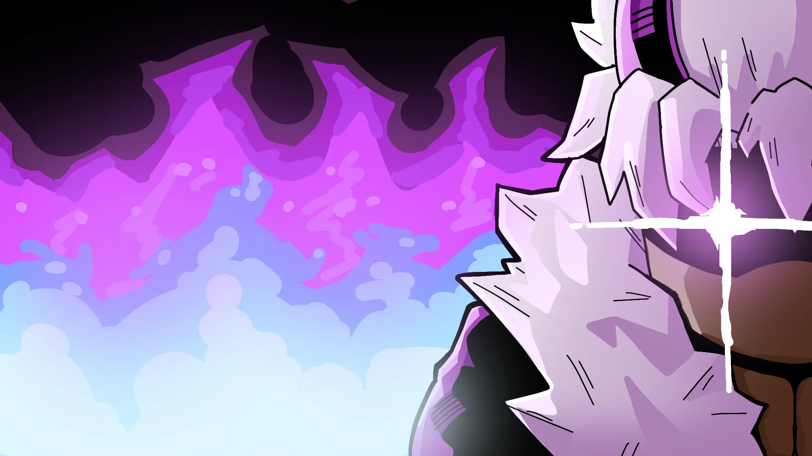
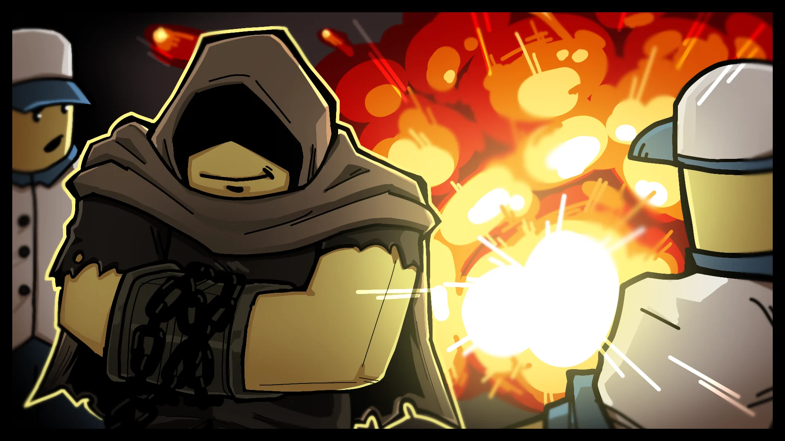
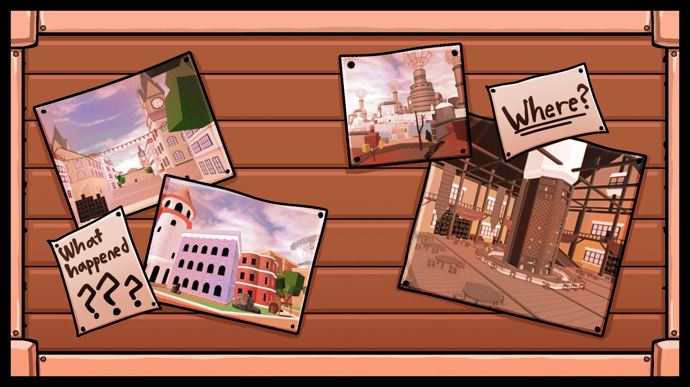
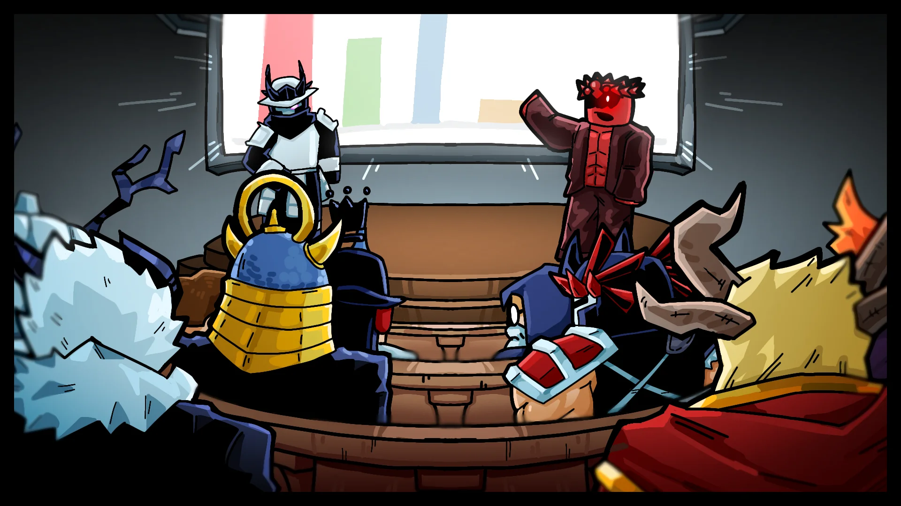
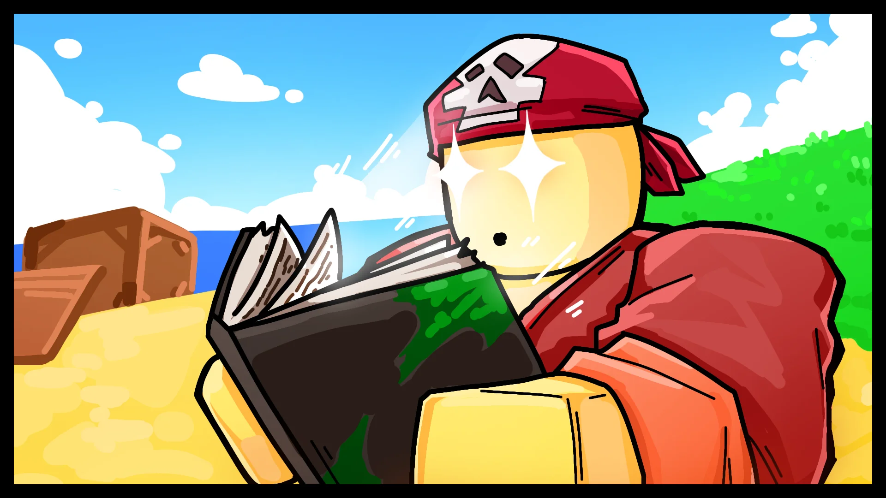

The Blox Bulletin
Les Yeux sur l'Horizon : un journal perdu, un criminel appréhendé, et des murmures de l'équipe de développement !
Un Assaillant Déchaîne une Attaque Dévastatrice lors de son Arrestation !

Une explosion a eu lieu au Village Pirate lors d'une arrestation de haute importance ! Plusieurs blessés !
Un signalement anonyme d'un résident du Village Pirate a rapporté un homme suspect rôdant dans le quartier avec l'air d'être « en train de préparer quelque chose ».
Après avoir correspondu à la description du criminel responsable de l'attaque soudaine sur le stand du vendeur de popcorn deux semaines plus tôt, le suspect a été rapidement encerclé par des escadrons de Marines armés.
Une fois appréhendé et mis aux arrêts, juste avant d'être escorté, le prisonnier a brusquement ouvert son manteau gris, révélant un arsenal caché d'explosifs compacts ! Le souffle de l'explosion a projeté plusieurs Marines au sol et a dispersé des débris sur toute l'île.
Les autorités confirment que le criminel reste en détention et sera placé sous surveillance renforcée du directeur de la prison locale.
Alors... Que s'est-il passé ?
Par l'Équipe de Développement
Les reworks de map, les changements d'interface, les nouvelles mécaniques, les reworks de fruits... où est tout ça ? On vous entend.
Nous avons montré des aperçus au fil des années. De nouvelles îles, une interface repensée, et de nouveaux systèmes. Une grande partie de ce contenu était déjà bien avancée en développement, certains même terminés. Mais au final, ça ne répondait pas à nos standards. C'est quelque chose avec lequel nous nous battons constamment en équilibrant la quantité de mises à jour et la qualité à long terme.
Même si nous faisons encore face à des problèmes de performances aujourd'hui, ça aurait pu être bien pire si nous avions continué avec certains reworks d'îles. Nous ne voulons pas ajouter des choses qui ont l'air nouvelles si elles compromettent la stabilité du jeu. Ou pire, faire dériver le jeu vers quelque chose qu'il n'était pas censé être.
Le rework de l'interface, par exemple, avait un look plus moderne. Mais vos retours étaient clairs. Ça ne ressemblait plus à Blox Fruits.
Pendant ce temps, des changements de map à grande échelle et de nouveaux systèmes ont commencé à empiler des problèmes de performances. À mesure que ces mises à jour grandissent, on réalise que l'optimisation doit passer en premier. On a remarqué qu'un grand nombre de joueurs au niveau maximum vont en Deuxième Mer pour le PvP, simplement parce que c'est moins exigeant pour leurs appareils.
Donc, le contenu teasé n'a pas disparu, il est en train d'être réimagné avec les performances en tête. Merci pour la patience, et pour avoir aidé à guider la direction des mises à jour.
Donnez Votre Avis : Résultats du Sondage !
Par l'Équipe Admin
Les résultats sont arrivés ! Des choses vraiment intéressantes à analyser ici ! Voici le décompte de plus de 100 000 votes sur le sondage de la semaine dernière.
Passez la souris sur le graphique pour voir les détails !
Le Mystère Échoué de Port Town
Par Wenloco E. SavageUne caisse abîmée s'est échouée sur le rivage de Port Town en début de semaine, et son contenu est tout sauf ordinaire.
Le bois de la caisse avait gonflé avec l'eau de mer, et à l'intérieur se trouvait un seul objet resté globalement intact : un grand journal relié en cuir. Bien que de nombreuses pages soient imbibées et presque illisibles, les aperçus de son contenu suscitent déjà beaucoup d'intérêt !
Des symboles griffonnés, des croquis, des informations perspicaces, des références à des noms jamais vus auparavant. Tous les indices suggèrent que ce journal appartenait autrefois à quelqu'un ayant accès à des renseignements de haut niveau.
Malheureusement, une grande partie du livre est trop fragile pour être manipulée. Les archivistes locaux disent qu'il faudra du temps pour sécher, restaurer et étudier les pages restantes. Nous ferons un rapport dès que davantage sera récupéré. Pour l'instant, la mer nous a offert un mystère — que nous avons bien l'intention de résoudre !
